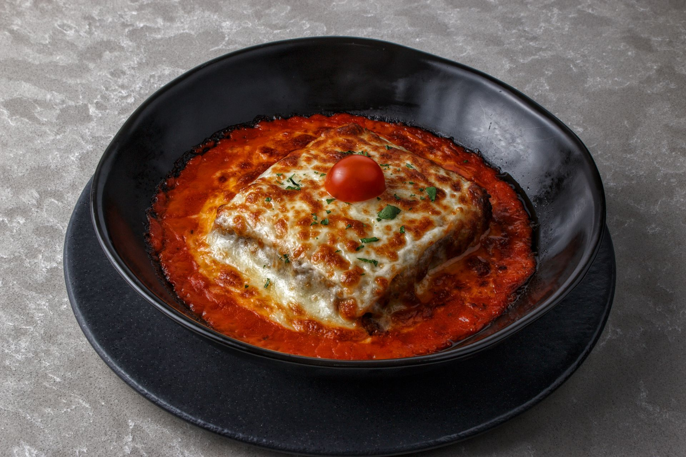

Lasagna Recipe:

Ingredients:
- Meat: You can use either ground beef or a mixture between beef, sausage or even chicken!
- Onion and Garlic: One whole onion and two cloves of garlic - to be cooked with the meat to add flavor.
- Tomato: for this recipe you'll need a can of crushed tomatoes, two cans of tomato sauce, and two cans of tomato paste.
- Sugar: Two tablespoons of white sugar to add subtle sweetness and bring overall balance to the tomato sauce.
- Spices and seasonings: You can use the spices you preffer, but this recipe in particular is flavored with fresh parsley, dried basil leaves, salt, italian seasoning, fennel seeds and black pepper.
- Lasagna noodles: Use store-bought or homemade noodles.
- Cheeses: Recommended cheeses for this recipe are: parmesan, mozzarella and ricotta.
- Egg: An egg helps bind the ricotta so it doesn't ooze out of the lasagna when you cut into it.
Description:
- Gather all your ingredients:
At this step you may also dice the onion and the garlic cloves.
- Brown the ingredients:
Cook the beef until browned, then, remove the beef and add the onion until it's clear, then add the garlic until fragrant (about 2-3 minutes).
- Add the tomatoes:
Stir in crushed tomatoes, tomato sauce, tomato paste and water. Season with sugar, 2 tablespoons of fresh parsley, basil, 1 teaspoon of salt, italian seasoning, fennel seeds, and pepper. Simmer, covered, for about 1 and a half hours, stirring occasionally.
- Boil the noodles:
Bring a large pot of lightly salted water to a boil. Cook the lasagna noodles in the boiling water for 8 to 10 minutes. Drain the noodles and rinse in cold water.
- Add the Ricotta:
In a mixing bowl, combine the ricotta cheese with 1 egg, the remaining parsley and a half teaspoon of salt.
- Preheat the oven:
Preheat the oven to 375 degrees F (or 190 C)
- Assemble:
To assemble, spread the meat sauce enough to cover the bottom of a 9x13-inch baking dish. Arrange 6 noodles lengthwise over meat sauce, overlapping slightly.
Spread with 1/2 of the ricotta cheese mixture. Top with 1/3 of the mozzarella cheese. Spoon 1 and 1/2 cups of meat sauce over mozzarella, and sprinkle with 1/4 cup of Parmesan cheese.
- Repeat layers:
Repeat the layers until all the ingredients are used, then top with more mozzarella and Parmesan cheese. Then cover with foil: to prevent sticking, either spray foil with cooking spray or make sure the foil does not touch the cheese.
- Bake:
Bake in the preheated oven for 25 minutes. Remove the foil and bake for an additional 25 minutes.
- Rest:
Let the lasagna rest at room temperature for about 15 minutes before cutting; this helps it set and firm up. You may also top it off with parsley to garnish.
Back